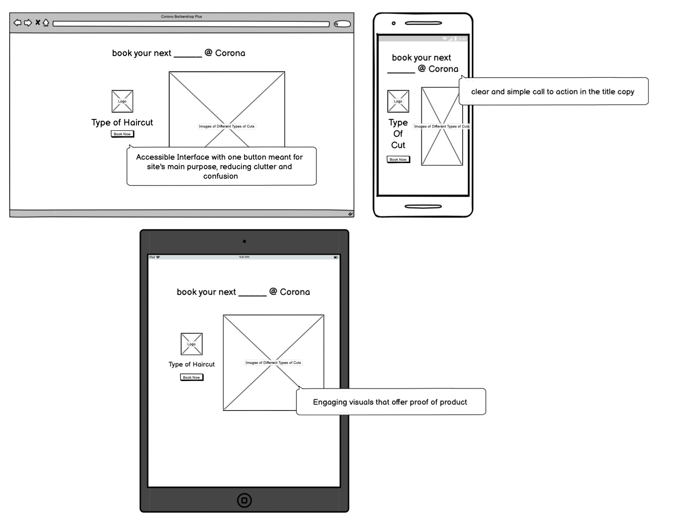
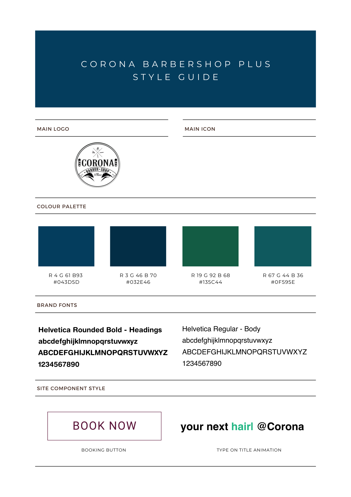

Visual Redesign
  web, with design annotations iPad Air (left), iPhone 13 Pro Max (right)
iPad Air (left), iPhone 13 Pro Max (right)


I chose to analyze and revise the website for my local barbershop, one I have been going to since I was 12, because over the years I've gotten close with the people that work there and I figured it would be a small token of appreciation for all the times they got me looking right.
iPad Air (left), iPhone 13 Pro Max (right)